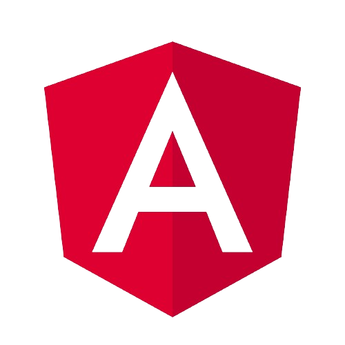
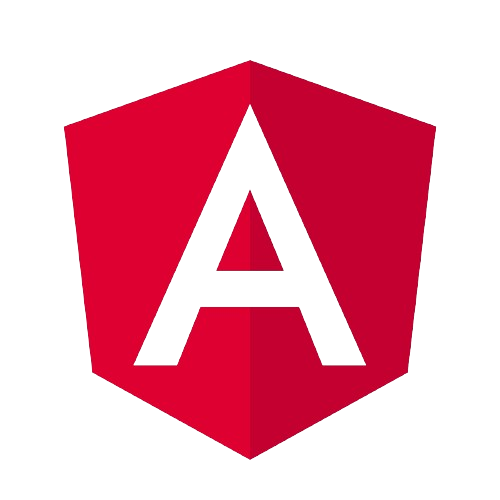

Sobre Mí
Conóceme
Actualmente estoy inmerso en el desarrollo de mis habilidades tecnológicas, una oportunidad que anteriormente no había tenido. Mi pasión por este sector y mi fascinación por la tecnología son constantes impulsores en mi camino. Aspiro a continuar creciendo y aprendiendo, especialmente enfocado en las tecnologías más innovadoras del momento.
Una de mis pasiones más arraigadas son los deportes. No pasa un solo día sin que dedique algún pensamiento a alguna disciplina deportiva. Es, sin duda, mi actividad favorita durante mi tiempo libre. Considero que la práctica deportiva es fundamental para el desarrollo tanto personal como profesional de una persona, ya que promueve la adquisición de habilidades imprescindibles como el trabajo en equipo, la disciplina, la responsabilidad y, especialmente, la capacidad de adaptación a los resultados imprevistos.
Por último, pero no menos importante, está el aspecto de la socialización. Me considero una persona con la capacidad de comprender diversos puntos de vista y de profundizar en cada tema. Disfruto explorando las razones detrás de las conclusiones a las que llega alguien sobre un tema específico. Creo firmemente que todos los días se puede aprender algo nuevo de las personas que nos rodean.
Mis skills
 
